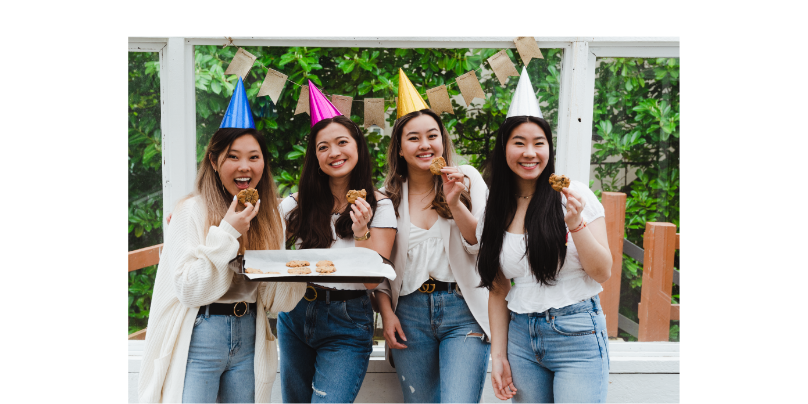

UBC Recreation Sticker Campaign
In a world where we barely talk to those around us, where fashion is homogenous and where humanity has become so globalized, how do we distinguish ourselves from others? Through STICKERS! They have become the berets of the decade, with websites like Red Bubble and Etsy popping off! Learn more about UBC Recreation.

Team
My Role –
Digital Marketing Assistant Director
Graphic Design
Chaein Lee –
Digital Marketing Assistant Director
Spark AR Studio
Jessica Liu –
Digital Marketing Assistant Director
Natascha Schoepl –
Digital Marketing Director
Tools
Adobe Illustrator
Adobe Photoshop
Duration
February 2019 - March 2019
Why
We have used stickers for UBC Recreation and for Storm The Wall but what about the Intramural League Sports? A part of the program that reaches more than 4000 participants deserves to be acknowledged and promoted. It is a great conversation starter especially when you see the diversity of our program on every laptop, water bottle and phone case on campus.
Goal
Our designs will focus on the UBC Recreation Intramural League Sports program , incorporating all 10 leagues with a little shout out to our referees. We were considering one standard design that can be used in the following years for all leagues, with yearly designs for each individual league. Depending on the league we were thinking around 50-200 stickers per league. Alternatively, ordering 3000 general stickers for all league participants. Depending on the shape of the sticker, the costs vary, however we were considering a hexagon shape so participants can add different stickers together and layer them.
Marketing Benefits
From a marketing perspective, stickers are an easy way to engage participants, ensure their loyalty and spread the word about our intramural program. Most students love a good sticker that can decorate their laptop and highlight the programs they are a part of and passionate about. Additionally, it is a fun token of appreciation for their continuous participation.
Action Plan
Our amazing team member Chaein was able to make UBC Recreation’s first Instagram filter, the filter includes our sticker designs with the captions “Which Intramural Sport are you?.” This was our way of promoting the sticker campaign and also engaging students to use and share the program. We plan to hand out stickers when participants sign-in for games. Since our Digital Marketing team will be conducting a research project towards the end of February, where we will investigate the reach of our program, in particular the blog posts and social media aspect, the stickers could be handed out to those who answer our survey. Lastly, they can be given as a thank you to all the UBC Sports Hall of Fame attendees.
Inspiration For Designs
Design Process
Initial Designs
– Includes all 10x leagues + 1x main sticker
– Only used primary UBC colors
Final Product
– Reduced designs to 5 due to budget
– Logo’s clear space considered in new designs
– Decision to use UBC secondary colors
– Addition of intramural events stickers
What I Learned
The Sticker Campaign project for UBC Recreation has taught us the importance of marketing and brand identity. Following design guidelines and color palettes was a challenge in itself as our designs had to go through several refinements that were then approved by the lead Director of Design.
This experience has tested our ability to conduct student marketing research and create final designs within a short period of time. As time was of the essence, we planned out each team member’s daily task and fit in meetings during a busy exam-filled month. This helped us stay productive and allowed us to get more work done without feeling burnt out.
Prior to the Sticker Campaign, the pitching process with the UBC Recreation Directors have taught us the importance of storytelling. Giving personal examples and explaining our research was what got us the opportunity to follow through with an action plan that later turned into reality.
Overall, this experience was fulfilling as my Team was very supportive and hardworking. Our Digital Marketing Team won the Excellence In Innovation Award by UBC Recreation at the end of the year.
My team from left to right: Chaein Lee, Natascha Schoepl, me, Jessica Liu